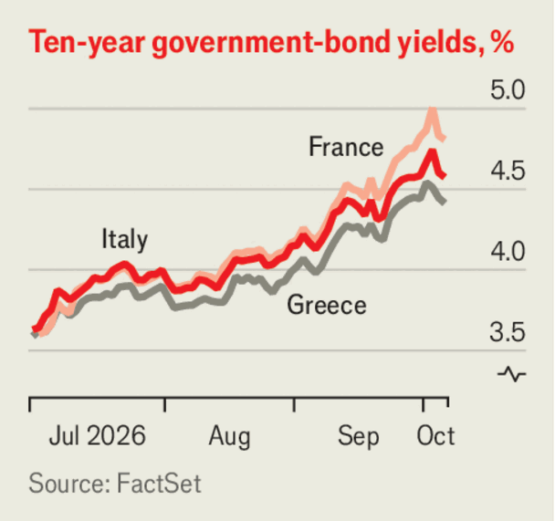

Business
Oct 8th 2026

The sell-off in global bond markets continued, and was particularly acute for French government debt. Worries that the government may not be able to control the budget deficit for 2027 coupled with the dimming prospect for fiscal consolidation ahead of next year’s presidential election have pushed up the yield on ten-year bonds. The spread between French and German borrowing costs recently hit their highest level for 14 years. The fiscal uncertainty has weighed on the euro, which dropped to a 17-month low against the dollar, below $1.12.
The countries of the G7 announced that they would release 100m barrels of diesel and crude oil from their emergency reserves over four months. Donald Trump had threatened to withhold American diesel exports unless the European Union released some of its stocks. He has now backed away from that threat and has announced other ways to curb the price of diesel in America, a big issue in next month’s midterm elections.
Persistently higher energy prices and crippling public debt are proving to be a real threat to the global economy, said Kristalina Georgieva, the head of the IMF. Inflation is also being fuelled by the AI-building boom, by adding to the demand for energy. The IMF estimates that AI hardware and related tech products now account for more than 10% of the world’s trade in goods.
Battling inflationary pressures that have been building all year, India’s central bank raised interest rates for the first time since February 2023, lifting its benchmark rate by a quarter of a percentage point to 5.5%. Markets think the Reserve Bank of India will increase rates again over the coming months.
The African Union launched the first pan-African credit-rating agency. This is part of a wider push to change how international investors price the risk of putting money into Africa, challenging what African leaders say is an unfair “Africa premium”. Only three African countries have investment-grade ratings, one reason Africa’s sovereign debt is so expensive to service.
SpaceX’s share price jumped to its highest level since the days following its IPO in June. The stock hit a low point in early August but has gradually risen since then in part because of bullish bets on the company’s future AI business, which develops the Grok series of large language models. Elon Musk said that SpaceXAI is to be rebranded as SpaceXSI; Donald Trump has called for the technology be renamed “super intelligence”.
Meanwhile, SpaceX was reportedly trying to raise $40bn through bonds and loans to buy more chips from Nvidia, which in August announced that it was working with Wall Street firms, such as Apollo, to assemble a $500bn financing fund for its customers. The news helped push Nvidia’s share price to another record; the company’s market value is now more than $5.7trn. Nvidia’s gains in turn spurred the S&P 500 and NASDAQ Composite to new highs.
The demand for Samsung’s memory chips is expected to result in a 780% rise in operating profit for the second quarter, year on year, to 107.4trn won ($80bn). The chips are integral to AI data centres, but there is a global shortage of them. Samsung’s share price has doubled this year.
Schneider Electric, a French engineering group, struck a deal to acquire PTC, an American software company specialising in complex industrial product design, engineering and data management, for $22.6bn. Schneider supplies essential units to data centres, such as cooling units and server racks. It says its acquisition will bridge the physical and digital worlds for the next generation of industrial AI.
The holding company for investments made by Canada’s billionaire Weston family agreed to buy Boots, a British high-street chemist and beauty chain that was founded in 1849, for £6.7bn ($8.9bn). It is the second change of ownership in a year for Boots, which was previously sold to a private-equity firm in August 2025.
A month after announcing that one of its frontier models had solved the Navier-Stokes equation, one of the hardest problems in mathematics, OpenAI said the same model had resolved or made substantial progress in more than 370 other puzzles. OpenAI shared the model’s deliberations en masse on GitHub, in an apparent effort to counter criticisms from mathematicians that it is solving problems without consideration for their effect on the field. An independent advisory board based at Princeton University described OpenAI’s new transparency as “the beginning, not the completion” of incorporating AI into mathematical knowledge.